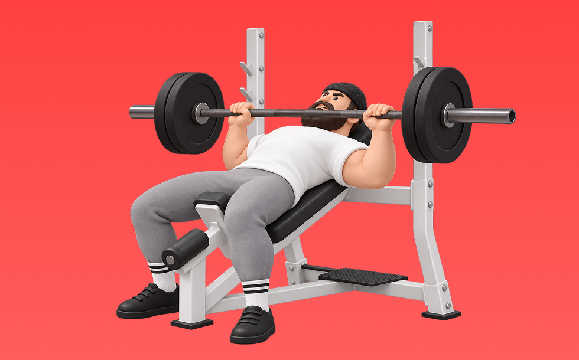

Incline Barbell Bench Press

Use a barbell to press. Lower to the chest and press up. Targets upper pecs, front delts, and triceps; lets you use heavier loads. Build chest size and pressing strength.
- Primary Muscle Group
- Chest
- Detailed Muscles
- Pectorals / Front delts / Triceps
- Equipment
- Barbell
- Also Known As
- インクラインベンチ / incline bench
YouTube Videos
-
How To: Incline Barbell Bench Press | 3 GOLDEN RULES! (MADE BETTER!)
-
Incline Barbell Press | Upper Chest | How-To Exercise Tutorial
-
Quick Tips: Incline Bench Press for better chest activation and less risk of a shoulder injury.
-
Incline Bench Press with PERFECT Form in 5 MINUTES (Build a Bigger, Stronger Chest)
-
How to PROPERLY Incline Barbell Bench Press (FIX YOUR FORM NOW)
-
How To: Barbell Incline Chest Press
-
Fix Your Incline Bench Press! Upper Chest Tips
-
How to PROPERLY Bench Press for Growth (5 Easy Steps)
-
HOW TO INCLINE BENCH PRESS | TUTORIAL
-
Incline Bench Press Tips For Maximum Upper Chest Activation
YouTube Shorts
-
The Perfect Incline Bench Press‼️
-
How to do an Incline Barbell Chest Press!
-
How to Incline Barbell Bench Press Correctly
-
The PERFECT Incline Dumbbell Chest Press
-
Fix Your Incline Bench Press Form
-
Easiest Way to Set Up Incline Smith Machine Bench Press (in Less than 1 Minute)
-
How to Do an Incline Barbell Bench Press
-
How To Bench Press With Perfect Technique (5 Steps)
-
Key tips for a strong and safe dumbbell incline press
-
Not Feeling your Upper Chest on Incline Bench Press? Make Sure You Do THIS
-
Proper Incline Bench Form for Better Gains | Dr. Jim Stoppani
-
Incline DB Bench 🔥 BEST Guide Ever Made
-
✅ The PERFECT Incline Smith Machine Bench Press
-
How To Do a Proper Incline Dumbbell Press
-
"🚨 Barbell Incline Bench Press Mistakes & How to Fix Them for Bigger Gains! 💪✅"
-
How to do a Dumbbell Incline Chest Press!
-
Fix Your Incline Bench Press in 60 seconds! || QUICK FORM TIPS #SHORTS
-
✅ Do Incline Bench Press LIKE THIS!
-
Incline Bench Press: Gym Shorts (How To)
-
How to Properly Perform The Incline Barbell Bench Press With Good Form (Exercise Demonstration)
-
Incline barbell chest press tutorial #fitness #chestworkout #tutorial
-
Incline Bench Press Mistake (STOP DOING THIS!)
-
How to PROPERLY Use The Incline Chest Press Machine At Planet Fitness (Exercise Tutorial)
-
INCLINED DUMBBELL CHEST PRESS MISTAKES, THE PERFECT INCLINE DUMBBELL CHEST PRESS
-
The Best Incline Bench Press workout - Note: ☝️✍️ #chestday #chestworkout #fitness
-
I Found The Best Incline For The Upper Chest
-
How to Setup on Incline Dumbbell Bench Press (and not waste energy)
-
How to Incline Dumbbell Bench Press to Maximize Upper Chest Growth
-
Perfecting Your Incline Bench Press: Tips and Techniques! #chest #fitnesstips #benchpress
-
Bench Press Variations (KNOW THE DIFFERENCE!)
-
THE SECRET TO MY MASSIVE CHEST - INCLINE DUMBBELL BENCH PRESS
-
Best Bench Press Tutorial Ever Made
-
Flat Vs Incline (Which Is Better?)
-
Incline Bench Press Setup on Smith Machine..#gym #benchpress #fitness #bodybuidling #workout
-
💥 Build a Bigger Chest With These 6 Bench Press Tips
-
Chest Day: Maximize Gains with the Best Chest Exercises!
-
Sam Sulek Focuses on Incline Press for Upper Chest 💪🔥 #samsulek #chestworkout
-
Sam Sulek's Dumbbell Bench Press Workout Form Tip 💯 #samsulek #samsulekshorts
-
Stop Doing Barbell Bench Press!
-
Smith machine incline bench press tips. Target: upper chest
How to Perform
- Set a stable position and brace your torso.
- Press with control without using momentum.
- Lower under control while keeping range of motion.
Form Tips
- Do not shrug your shoulders
- Keep wrists neutral
- Avoid excessive momentum
Pro Tips
- Prioritize form and range of motion before adding load.
- If shoulders feel uncomfortable, reduce load and range.
Rep Guide
General guidelines. Adjust based on your goal, experience, and condition.
- Strength: 1-5 reps
- Hypertrophy: 6-12 reps
- Endurance: 13-20 reps
Get the app
Log your trainingand workoutsin Biggr.Start for freeright now.